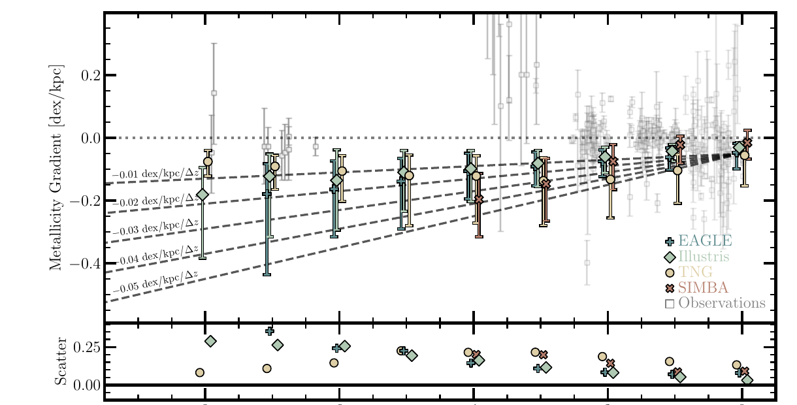

The four simulations move in the same direction
Despite different hydrodynamics and sub-grid recipes, EAGLE, Illustris, TNG, and SIMBA all predict more negative metallicity gradients toward earlier cosmic times.
Collaborator study · Simulation context
Garcia et al. compare how four widely used cosmological simulations distribute metals inside galaxies. They find that smooth-feedback models increasingly disagree with the observed gradients at high redshift.

A galaxy can have the right total metal content for the wrong physical reason. Radial gradients measure where enrichment occurs, how gas moves, and how efficiently metals mix.
The paper applies the same gas-phase metallicity-gradient measurement to EAGLE, Illustris, TNG, and SIMBA from redshift zero into the early Universe. Using one fitting range, selection, and calibration prevents analysis choices from being mistaken for physical differences.
The redshift and stellar-mass trends show whether the simulations differ only in normalization or also in the structure produced by their feedback and metal-transport models.
Despite different hydrodynamics and sub-grid recipes, EAGLE, Illustris, TNG, and SIMBA all predict more negative metallicity gradients toward earlier cosmic times.
The evolution is not simply a redshift offset. Higher-mass systems tend to develop the strongest negative gradients, linking the tension to how feedback and central enrichment scale with galaxy growth.
The available measurements scatter around gradients that are much closer to zero than the simulated medians, especially at high redshift. Selection and calibration remain important, but do not erase the overall mismatch.
The authors argue that insufficient metal mixing or feedback that is not disruptive enough could preserve overly concentrated enrichment. Turbulent diffusion and stronger time variability can be tested directly.
Garcia et al. (2025) does not analyse SPICE. It establishes the smooth-feedback tension that the follow-up study tests directly with bursty and smooth models at high redshift.
That distinction is important: this is comparative context, not a SPICE result. Its value is in identifying metallicity gradients as a discriminating observable and in showing that several large-volume simulations share the same qualitative failure mode.
Interpretation boundary: the proposed role of stronger feedback or turbulent diffusion is a physical inference from the comparison, not a unique diagnosis. The second Garcia paper brings SPICE, FIRE-2, and THESAN into the test.